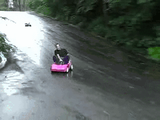

From Febuary
Alex was born in a small town in Pennsylvania called Somerset on Febuary 21st 1992. He was raised just across the
Pennsylvania, Maryland border, in Grantsville Maryland. As a child Alex was intrigued with sports, mainly basketball.
Some say he could dribble a basketball from the day he was able to walk. As Mr. Brenneman got older his
interests began to change toward more "extreme" sports. When Alex turned 14 his parents (David and Laverna Brenneman)
took Alex to get his very first dirtbike. It wasn't long before Alex was riding all over his small town and
learning to jump his new toy.
14 going on 20
Alex continued to ride his new dirtbike until he outgew the small Honda crf100. By this time his interests
had begun to change again, this time to cars. Alex loved every aspect of cars. The speed, the size, and most
importantly the freedom that came along with it. He began to save for a car at age 15 by working for his dad and
eventually getting his first job in a metal fabrication shop. He learned a lot of useful skills working at that job.
Alex's main duties were not glamorous by any means. He spent most of his day sweeping the floors and doing the
yard work. Finally after about a year and a half of saving his money Alex bought his first car: a 1999 Pontiac
Sunfire. 
New Beginings
Alex had that car for another 2 years before he needed to get a new car. About 3 weeks after purchasing his
new car, Alex decided it would be fun to show off to some friends how "good" he was at
drifting his car. It didn't take long before
he relized he had made a very big mistake. As he was sliding, he lost control of the car and went careening into
a lagre tree. Alex was quoted as saying "I watched as time slowed down to a crawl. When the car hit the tree I could
see the hood buckel and then watched as the air bags deployed". Luckily everyone in the car was totally fine.
